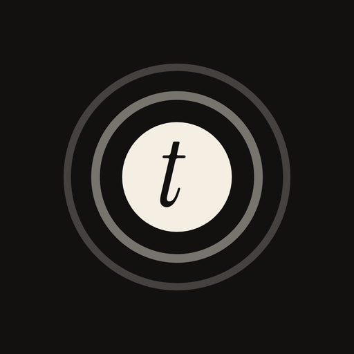

Support
Need help? Email krrvtz@gmail.com. We reply personally within 2 business days. Personal data requests (LGPD) are answered within 15 days.
How do I set up the two taps?
In the app, go to Profile → Save with a double back tap and follow the steps (about 1 minute): you install the "Salvar no TapLook" shortcut (it keeps this Portuguese name) and turn it on in iPhone Settings → Accessibility → Touch → Back Tap → Double Tap. Works on iPhone 8 or later with iOS 16.4 or newer (TapLook's minimum). Thick cases can get in the way; if so, use "Choose a screenshot" in the app. Automatic background removal needs iOS 17 or newer; on iOS 16 the piece keeps its background.
What do the two taps do?
TapLook reads what was on screen: a piece in a store becomes a wish with its price (if it's already on your list, the new price goes into its history); an order or receipt becomes a purchase in your wardrobe; someone's outfit shows which pieces you already own.
Does TapLook alert me when a price drops?
No. It keeps every price you record. When you see the piece again (on Black Friday, for example), double-tap it: TapLook compares it with the prices you recorded and flags if it was cheaper in the previous 30 days.
The reading got the price or store wrong. What now?
Everything is shown pre-filled before saving so you can fix it. After saving, tap the pencil on the wish or piece.
How many studio photos do I get?
100 studio photos a month on any plan (23 a week on the weekly plan). Each photo uses 1 credit, taken only when the photo is delivered: if something fails, nothing is taken. At each refill your balance resets to 100 (23 on weekly): credits don't roll over, and leftovers don't add to the refill. The 3-day free trial, available only on the annual plan, includes 10 complimentary photos. In your first month of subscription you also get 48 welcome credits (once), to set up your wardrobe. Plans also include screenshot reads and automatic organizing of your pieces, with no credits and no counter in the app. To prevent abuse there is a fair-use limit: up to 100 a day of each and 185 every 30 days for both combined (one day per subscription can reach 185, to add your whole wardrobe at once). In the free trial: up to 60 reads and 120 organizings. You can follow it all in Profile → Your usage. Outside Brazil and the US, the number of studio photos may differ (see below).
Protection limits
To keep the service from unusual use (for example, many photo attempts in a short time), a few automatic limits apply. In normal use, almost no one reaches them. If you reach one, new attempts pause for a few days and your credits stay in your balance.
| Protection | Every 30 days (all plans) | Weekly plan, also every 7 days (counted from the current refill) |
|---|---|---|
| Studio photo attempts (including those that don't pass our quality check) | your refill size + 5 (105 with a refill of 100) | 25 |
| Reads with the stronger AI model (used when the regular read isn't enough) | 10 | 1 |
| Automatic fixes of a photo | 6 | 1 |
| Delivered photos you don't confirm, with the credit returned to your balance | 5 | 1 |
Also: up to 40 studio photos a day and up to 2 GB of storage per account.
Why did I get fewer than 100 photos a month?
Outside Brazil, the number of studio photos depends on your plan's price and your country's tax, which vary from one Apple store to another. In the US it's 100 a month (23 a week on the weekly plan); in countries with a lower price or higher tax, the number may be lower. Your plan's exact number is shown in Profile → Your usage. The rules are the same: each photo uses 1 credit, only when it's delivered, and credits don't roll over.
How do I cancel my subscription?
In iPhone Settings → your name → Subscriptions, or in Profile → Settings → Manage subscription inside the app.
How do I request a refund?
Apple handles billing, so refunds are requested at reportaproblem.apple.com (sign in with your Apple account, choose "Request a refund" and select TapLook). In Brazil, within 7 days of purchase or of the start of billing you're entitled to a full refund (art. 49 of the Consumer Defense Code): if Apple doesn't approve a request made in that period, email krrvtz@gmail.com and we'll refund you directly. Details in item 3 of the Terms of Use.
How do I restore a purchase?
In Profile → Settings → Restore purchases inside the app.
Where did the virtual try-on go?
It was removed on October 29, 2026: AI image generation wasn't reliable enough yet. If you had a selfie or try-ons, you can export them (Profile → Settings → Export my data) and delete the selfie (Profile → Settings → Delete my selfie). To delete old try-ons, email krrvtz@gmail.com or delete your account.
How do I delete my account and data?
In Profile → Settings → Delete account. Deletion is permanent and removes photos, wishes, price history, purchases, outfits and trips.
Are my photos used to train AI?
No. And screenshots read by the AI aren't stored on our server.
I found a security issue. How do I report it?
Email krrvtz@gmail.com with the subject "TapLook Security". We confirm receipt within 2 business days. Please don't access other people's data and wait for the fix before disclosing. Details in security.txt.